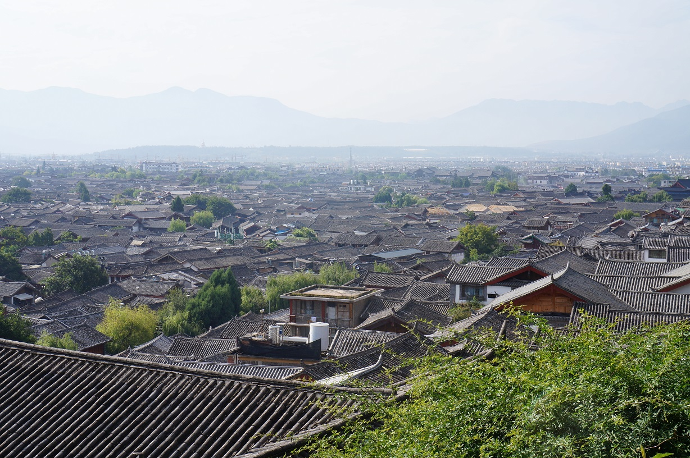

武汉
武汉，简称“汉”，别称“江城”，是湖北省省会、中部六省唯一的副省级市和特大城市，
中国中部地区中心城市，全国重要的工业基地、科教基地和综合交通枢纽。截至2015
年末，全市下辖13个市辖区，3个国家级开发区，总面积8494.41平方公里，全市常住
人口1060.77万，常住人口城镇化率79.3%，户籍人口城镇化率67.6%。
武汉地处江汉平原东部，长江中游。世界第三大河长江及其最大支流汉江横贯市境中央，
将武汉中心城区一分为三，形成武昌、汉口、汉阳三镇隔江鼎力的格局。
武汉有九省通衢之称，是中国内陆最大的水陆空交通枢纽，全国首个综合交通枢纽研究
试点城市，高铁网辐射大半个中国，拥有40条境外直达航线，是华中地区唯一可
直航全球四大洲的城市。
武汉是国家历史文化名城、中国楚文化的重要发祥地，距今6000年前的新石器时代已有
先民在此繁衍生息；境内的盘龙城遗址有3500年历史；清末洋务运动使武汉工业兴起和
经济迅速发展，使其成为近代中国重要的经济中心；武汉是中国民主革命的发祥地，武
昌起义作为辛亥革命的开端，具有重要历史意义

丽江
丽江市，云南省辖地级市，位于云南省西北部云贵高原与青藏高原的连接部位，市区中心
位于东经100°25'北纬26°86'，海拔高度为2418米。北连迪庆藏族自治州，南接大理白
族自治州，西邻怒江傈僳族自治州，东与四川凉山彝族自治州和攀枝花市接壤。总面积
20600平方公里。辖古城区、玉龙纳西族自治县、永胜县、华坪县、宁蒗彝族自治县，共
有69个乡（镇）、446个村民委员会，总人口1244769人（第六次人口普查）。丽江古城
区是中国罕见的保存相当完好的少数民族古城，集中了纳西文化的精华，完整地保留了宋、
元以来形成的历史风貌。
丽江自古以来是丝绸之路和茶马古道的中转站，丽江有建于南宋的丽江古城，纳西族名称叫
“巩本知”，“巩本”为仓廪，“知”即集市，丽江古城曾是仓廪集散之地。
南京
南京，简称“宁”，古称金陵、建康，是江苏省省会、副省级市、南京都市圈核心城市，国务院
批复确定的中国东部地区重要的中心城市、全国重要的科研教育基地和综合交通枢纽。南京地
处中国东部地区、长江下游、濒江近海。全市下辖11个区，总面积6587.02平方公里，2016年
建成区面积1125.78平方公里，常住人口827万人，城镇人口678.14万人，城镇化率82%，是长
三角地区及华东地区唯一的特大城市。
南京是中国四大古都、首批国家历史文化名城，是中华文明的重要发祥地，历史上曾数次庇佑华
夏之正朔，长期是中国南方的政治、经济、文化中心。南京地区早在100至120万年前就有古人类
活动，35至60多万年前已有南京猿人在南京汤山生活。公元229年，吴大帝孙权在此建都，此后东
晋、南朝的刘宋、萧齐、萧梁、陈均相继在此建都，故南京有“六朝古都”之称。继此之后，南京又
先后成为杨吴西都、南唐国都、南宋行都、明朝京师、太平天国天京、中华民国首都，故称“十朝都会”。